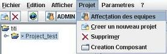
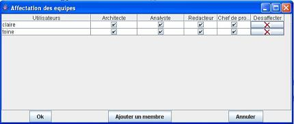

Pré-requis : Être le chef de projet du projet sélectionné .
Sélectionner le projet auquel l'utilisateur doit être modifié dans l'arborescence.
Dans le menu « Projet », choisir le menu « Affectation des équipes ».

Cocher les droits correspondants a l'utilisateur

Cliquer sur « Valider »
|
|